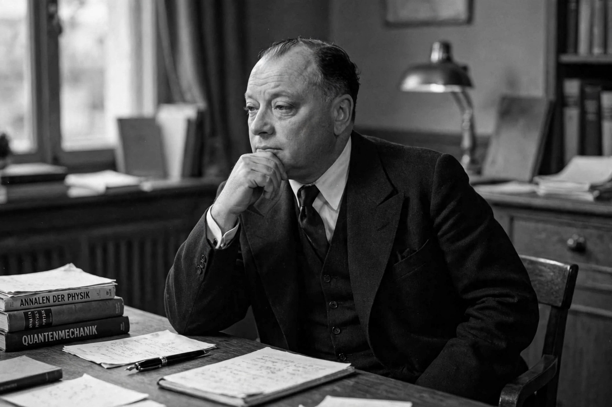

Wolfgang Pauli
| Born | 25 April 1900, Vienna, Austria-Hungary |
|---|---|
| Died | 15 December 1958 (aged 58), Zurich, Switzerland |
| Known for | Pauli exclusion principle, Neutrino hypothesis, Pauli matrices |
| Awards | Nobel Prize in Physics (1945) |

[Image: Photograph of Wolfgang Pauli, a round-faced man in a suit, in middle age]Wolfgang Ernst Pauli (25 April 1900 – 15 December 1958) was an Austrian-Swiss theoretical physicist and a pioneer of quantum physics. In 1945, after having been nominated by Albert Einstein, Pauli received the Nobel Prize in Physics for his 'decisive contribution through his discovery of a new law of Nature, the exclusion principle or Pauli exclusion principle'.
Pauli also postulated the Neutrino (1930), introduced the Pauli matrices for spin, proved the spin–statistics theorem (1940), and was famed as the 'conscience of physics' — a devastatingly astute critic whose verdict ('That is not even wrong') became proverbial. His correspondence and psychological friendship with Carl Jung produced famous essays on synchronicity and the 'Pauli effect' folklore of equipment failing in his presence.
Career
Pauli was a prodigy: at 21 he wrote a 237-page encyclopedia article on relativity that Einstein praised. A Munich doctorate under Sommerfeld (1921) led to Göttingen (with Max Born), Copenhagen (with Niels Bohr), Hamburg — where he formulated the exclusion principle (1925) and the quantum theory of spin using his matrices (1927) — and from 1928 the chair at ETH Zurich. The neutrino came in a celebrated 1930 letter to the 'radioactive ladies and gentlemen' at a Tübingen meeting, proposing a 'desperate remedy' for the missing energy in beta decay; Fermi built the theory, and the particle was detected in 1956.